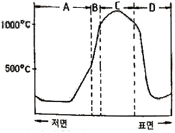
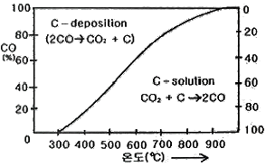
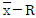
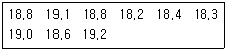

제선기능장 (2018-03-31 기출문제)
1과목: 임의 구분
1. 코크스 중 회분을 구하는 식은?
- 장입탄 중 회분 / 전 코크스 실수율
- 장입탄 중 회분 - 전 코크스 실수율
- 장입탄 중 회분 × 전 코크스 실수율
- 장입탄 중 회분 + 전 코크스 실수율
(정답률: 95%)

2. 고로 내에서 코크스의 역할로 옳지 않은 것은?
- 환원제로서의 역할
- 연소에 따른 열원으로서의 역할
- 고로 내의 통기를 잘하기 위한 spacer로서의 역할
- 선철, 슬래그 간을 냉각시키는 매개체로서의 역할
(정답률: 90%)
3. 고로용 펠릿의 소성기구에 대한 설명으로 옳은 것은?
- 펠릿의 소성은 보통 환원성 분위기에서 실시한다.
- 펠릿의 소성과 경화는 재결정 hematite 결합이 가장 쉽다.
- 압궤강도를 증대시키려면 소성온도를 올려 기공률을 감소시킨다.
- 원료가 magnetite 일 때 광석입자는 환원하면서 확산에 의해 분해된다.
(정답률: 72%)
4. 소결조업시 장입물의 착화에서 배광까지 진행되는 Pallet 내를 4개 층으로 구분하였을 때, Pallet의 장입층 표면부터 순서대로 옳게 나열한 것은?
- 소결대 → 하소대 → 건조대 → 습원료대
- 건조대 → 소결대 → 하소대 → 습원료대
- 소결대 → 건조대 → 습원료대 → 하소대
- 하소대 → 소결대 → 건조대 → 습원료대
(정답률: 79%)
5. 품위 55.10%의 철광석으로부터 철분 93.45%의 선철 1.5톤을 만드는데 필요할 광석량은 몇 kg인가? (단, 철분이 모두 환원되어 철의 손실이 없다고 가정한다.)
- 1476
- 1576
- 2444
- 2544
(정답률: 77%)
6. 다음 중 소결 장비의 구성요소가 아닌 것은?
- 배재구
- 배사판
- 드럼 피더
- 서지 호퍼
(정답률: 77%)
7. 소결광의 생산성과 품질은 통기도의 영향이 크다. 통기도에 대한 설명으로 옳은 것은?
- 통기도가 커지면 소결속도는 늦어진다.
- 의사입자를 강화하면 통기도는 감소한다.
- 원료 입자를 작게 할수록 통기도는 향상된다.
- 통기도가 좋으면 열효율 개선으로 품질이 좋아진다.
(정답률: 87%)
8. 고로에서 선철 1ton을 제조할 때, 원료 중 가장 많이 필요한 원료는?
- 석회석
- 코크스
- 소결광
- Mn 광석
(정답률: 80%)
9. 코크스 습식 소화 설비와 비교한 코크스 건식 소환 설비의 특징이 아닌 것은?
- 낮은 고정 탄소비
- 코크스의 강도 향상
- 코크스 평균 입경하락
- 적열코크스의 폐열회수
(정답률: 66%)
10. 그림은 소결 과정 중 점화 후 약 10분이 경과하였을 때 소결층 내의 수직 단면상 온도 분포를 나타낸 것이다. B가 나타내는 것으로 옳은 것은?

- 습윤대
- 연소대
- 건조대
- 소결광대
(정답률: 91%)
11. 다음 중 선광의 종류가 아닌 것은?
- 비중선광
- 입도선광
- 자력선광
- 중액선광
(정답률: 64%)
12. 코크스로의 최고 가동률을 옳게 나타낸 식은?
- (coke oven의 수 / 일일 최고 압출문수) × 100
- (일일 최고 압출문수 / coke oven의 수) × 100
- (일간 최대작업 가능문수 / 일간 평균작업 가능문수) × 100
- (일간 평균작업 가능문수 / 일간 최대작업 가능문수) × 100
(정답률: 84%)
13. 다음 중 소결광의 부원료와 가장 거리가 먼 것은?
- 규사
- 사문암
- 생석회
- 능철광
(정답률: 79%)
14. 다음 중 소결광 재료원료로 가장 적절하지 않은 것은?
- 분광
- 반광
- 밀 스케일
- 분 슬러지
(정답률: 86%)
15. 다음 중 원료탄의 파쇄입도에 영향을 주는 요인에 대한 설명과 가장 거리가 먼 것은?
- 탄의 수분이 많으면 파쇄하기 어렵다.
- 분쇄전 입도가 크면 분쇄후 입도도 크다.
- 석탄의 휘탄부는 파쇄하기 쉽고 암탄부는 파쇄하기 어렵다.
- 탄의 HGI(Hardgrove Grindability Index)가 크면 파쇄하기 어렵다.
(정답률: 83%)
16. 다음 중 코크스가 갖추어야 할 조건으로 옳은 것은?
- 입도는 클수록 좋다.
- 황 함유량은 적고 수분의 함유량은 많아야 한다.
- 취급시 또는 고로 안에서도 잘 분쇄되어야 한다.
- 회분의 양은 적고, 고정탄소의 양은 많아야 한다.
(정답률: 85%)
17. 다음 중 적철광에 대한 설명으로 옳은 것은?
- 화학식은 FeCO3이다.
- 철광석 중 자성이 가장 강하다.
- 순수한 상태의 적철광은 철분을 48.3% 함유하고 있다.
- CO 가스와 반응하여 Fe3O4 상태로 환원될 때, 열이 발생한다.
(정답률: 75%)
18. 결정수제거, 탄산염분해를 통해 CO2를 제거할 목적으로 철광석을 산소와의 반응이 별로 일어나지 않은 온도 범위에서 가열 하는 공정은?
- 하소
- 배소
- 소결
- 선광
(정답률: 69%)
19. 고로의 유효높이를 바르게 설명한 것은?
- 풍구 수준면에서 장입 기준선까지
- 출선구 수준면에서 장입 기준선까지
- 풍구 수준면에서 노구 하단 선까지
- 출선구 수준면에서 노구 하단 선까지
(정답률: 78%)
20. 주물용선에 Si를 많이 함유하고 Mn을 적게 함유 하도록 배합할 때, 고려해야할 사항과 가장 거리가 먼 것은?
- 필요에 따라 조업도를 약간 낮춘다.
- 슬래그의 염기도를 약간 낮게 한다.
- 일정량의 코크스량에 대하여 광석 장입량을 적게 한다.
- 선철 중에 들어가는 금속원소 환원율을 최저로 하여 광석배합을 한다.
(정답률: 54%)
2과목: 임의 구분
21. 열풍로의 내화물에 대한 내용으로 옳지 않은 것은?
- 고온 하중에서의 체적 안정성이 있어야 한다.
- 내화도와 열간 용적 안정성이 좋은 연와를 사용해야 한다.
- 연소가스와 연소공기 중에 함유된 dust에 대한 내구성이 중요하다.
- 열풍로 내화물로 규석연와는 600℃ 이하에서 용적변화가 작기 때문에 많이 사용된다.
(정답률: 83%)
22. 다음 중 출신 설비에 대한 설명으로 옳은 것은?
- 탕도 : 용선과 슬래그를 비중차에 따라 분리시키는 설비
- 스키머 : 출선종료 후 내화재료를 이용하여 출선구를 막는 장치
- 폐쇄기 : 출선된 용선을 용선운반차까지 흐르도록 주상에 설치된 용탕 통로
- 개공기 : 고로 내의 용융물을 출선구로 배출하기 위하여 출선구 개공에 이용되는 것
(정답률: 84%)
23. 고로 노정장입 장치에 구비조건에 해당되지 않은 것은?
- 원료장입시 가스 유출이 쉬워야 한다.
- 장치가 간단하고 유지보수가 쉬워야 한다.
- 조업속도와 장입속도의 균형이 맞아야 한다.
- 원료장입이 균일해야 하고 장입방법 변경이 쉬워야 한다.
(정답률: 88%)
24. 다음 중 고로의 주상설비가 아닌 것은?
- 개공기
- 주선기
- Mud Gun
- 집진장치
(정답률: 77%)
25. 다음 중 염기성 내화벽돌에 해당되는 것은?
- 납석질 벽돌
- 규석질 벽돌
- 알루미나질 벽돌
- 돌로마이트질 벽돌
(정답률: 80%)
26. 다음 노외탈황법 중 교반법의 종류가 아닌 것은?
- KR법
- NKK법
- ATH법
- Rheinstahl법
(정답률: 74%)
27. 54% CaO, 1.8% SiO2, 0.23% Al2O3, 0.92% MgO, 0.45% FeO, 0.27% S인 석회석으로, 염기도 1.3으로 조업하면 유효 석회성분은 약 몇 %인가? (단, Ca, Si, Al, Mg, Fe, Mn, S, O의 원자량은 각각 40, 28, 27, 24, 56, 55, 32, 16로 계산한다.)
- 45.19
- 51.19
- 55.45
- 60.45
(정답률: 56%)
28. 다음 중 노상 냉각 사고의 원인과 가장 거리가 먼 것은?
- 노내 침수 발생
- 장기간 걸림 발생
- 코크스 과다 장입
- 장기간 휴풍 발생
(정답률: 81%)
29. 200kg의 순수한 석회석 중 CaO의 함량은 몇 kg인가? (단, Ca, C, O의 원자량은 각각 40, 12, 16이다.)
- 56
- 84
- 112
- 156
(정답률: 75%)
30. 다음 중 고로 장입물의 걸림(Hanging) 원인과 가장 거리가 먼 것은?
- 산소 취입량 증가
- 슬래그의 점도 증가
- 노내 통기 저항 지수 증가
- 풍압 상승에 따른 풍량 저하
(정답률: 78%)
31. 고로내의 각 영역별 특징으로 옳은 것은?
- 융착대 - 광석의 환원, 연화융착
- 괴상대 - 광석의 직접환원, 적하개시
- 적하대 - 원료의 예열, 간접환원반응
- 연소대 - carbon deposition반응, 간접환원반응
(정답률: 69%)
32. 다음 중 탄소의 용해도를 감소시키는 원소는?
- V
- Mn
- Cr
- Si
(정답률: 68%)
33. 다음 중 용광로 공정해석의 목적과 가장 거리가 먼 것은?
- 조업성적을 향상시키기 위하여
- 안정적인 조업을 확보하기 위하여
- 용광로 융착대의 노내 상황을 실측하기 위하여
- 장기 또는 단기적인 용광로의 각종 조업지표의 변화를 예측하기 위하여
(정답률: 81%)
34. 파이넥스(FINEX) 공정에서 사용하는 주연료로 적합한 것은?
- 분탄
- 분광
- 소결광
- 괴상 철광석
(정답률: 67%)
35. 고로의 종풍 조업에 대한 설명으로 틀린 것은?
- 최종 출선 후 휴풍하고 노정 가스를 빼낸다.
- 종풍에 앞서 노내 장입물을 코크스로 치환하면서 장입물 레벨을 낮춘다.
- 노정을 개방하여 정압으로 유지하고 공기를 취입하는 등의 작업을 한다.
- 노내 잔류 코코스의 냉각을 위해 노정 주수시 가스반응이 폭발적으로 일어날 위험이 있다.
(정답률: 63%)
36. 노정가스 중 N2는 60%, 노정가스량은 4500m3/t일 때, 송풍량은 약 얼마인가? (단, 공기 중에 N2는 79%이다.)
- 2700m3/t
- 3060m3/t
- 3418m3/t
- 7500m3/t
(정답률: 74%)
37. 그림은 고로 내 가스반응 곡선으로 부두아 곡선을 나타낸 것이다. 이때의 설명으로 옳은 것은?

- 고로에서 고압조업을 하면 carbon-deposition의 가능성이 커진다.
- carbon-deposition 반응은 고온부에서 일어나므로 반응 속도가 아주 빠르다.
- carbon-solution 반응은 고온측에서 일어남에도 반응 속도가 비교적 느리다.
- 압력이 1기압보다 커지게 되면 곡선의 왼쪽으로 이동하게 되어 CO2+C→2CO 의 carbon-solution 반응이 일어난다.
(정답률: 67%)
38. 고로용 열풍로에 대한 설명으로 틀린 것은?
- 열풍로의 외연식에는 Koppers식이 있다.
- 열풍로의 내연식에는 Cowper식이 있다.
- 열풍로는 연소실과 축열실로 구성되어 있다.
- 내연식은 연소실과 축열실이 동일한 원통 철피 내에 들어 있지 않다.
(정답률: 85%)
39. 고로의 열정산에서 입열에 해당되는 것은?
- 열풍의 현열
- 용선의 현열
- 슬래그의 현열
- 노정가스 현열
(정답률: 71%)
40. 열풍로에서 나온 열풍이 고로 내부로 송입되는 과정의 순서로 옳은 것은?
- 열풍본관 → 환상관 → 송풍지관 → 블로우 파이프 → 풍구
- 열풍본관 → 송풍지관 → 블로우 파이프 → 환상관 → 풍구
- 열풍본관 → 환상관 → 블로우 파이프 → 송풍지관 → 풍구
- 열풍본관 → 송풍지관 → 환상관 → 블로우 파이프 → 풍구
(정답률: 73%)
3과목: 임의 구분
41. 고로 내에서 환원되기 쉬운 것부터 옳게 나열한 것은?
- FeO → Fe2O3 → SiO2 → CaO
- CaO → FeO → Fe2O3 → SiO2
- Fe2O3 → FeO → MnO → SiO2
- SiO2 → CaO → FeO → Fe2O3
(정답률: 78%)
42. 다음 성분 중 고로가스에서 가장 적은 것은?
- CO
- H2
- CO2
- N2
(정답률: 76%)
43. Ralph M. Barnes 교수가 제시한 동작경제의 원칙 중 작업장 배치에 관한 원칙(Arrangement of the workplace)에 해당되지 않는 것은?
- 가급적이면 낙하식 운반방법을 이용한다.
- 모든 공구나 재료는 지정된 위치에 있도록 한다.
- 적절한 조명을 하여 작업자가 잘 보면서 작업할 수 있도록 한다.
- 가급적 용이하고 자연스런 리듬을 타고 일할 수 있도록 작업을 구성하여야 한다.
(정답률: 73%)
44. 어떤 회사의 매출액이 80000원, 고정비가 15000원, 변동비가 40000원일 때 손익분기점 매출액은 얼마인가?
- 25000원
- 30000원
- 40000원
- 55000원
(정답률: 67%)
45. 국제 표준화의 의의를 지적한 설명 중 직접적인 효과로 보기 어려운 것은?
- 국제간 규격통일로 상호 이익도모
- KS 표시품 수출 시 상대국에서 품질인증
- 개발도상국에 대한 기술개발의 촉진을 유도
- 국가 간의 규격상이로 인한 무역장벽의 제거
(정답률: 76%)
46. 전수검사와 샘플링검사에 관한 설명으로 맞는 것은?
- 파괴검사의 경우에는 전수검사를 적용한다.
- 검사항목이 많을 경우 전수검사보다 샘플링검사가 유리하다.
- 샘플링검사는 부적합품이 섞여 들어가서는 안되는 경우에 적용한다.
- 생산자에게 품질향상의 자극을 주고 싶을 경우 전수검사가 샘플링검사보다 더 효과적이다.
(정답률: 84%)
47. 직물, 금속, 유리 등의 일정 단위 중 나타나는 흠의 수, 핀홀 수 등 부적합수에 관한 관리도를 작성하려면 가장 적합한 관리도는?
- c 관리도
- np 관리도
- p 관리도

관리도
(정답률: 69%)
48. 다음 데이터의 제곱합(sum of squares)은 약 얼마인가?

- 0.129
- 0.338
- 0.359
- 1.029
(정답률: 64%)
49. 탄소강에서 탄소함량이 0.2%에서 0.8%로 증가할 때 감소하는 기계적 성질은?
- 충격치
- 경도
- 항복점
- 인장강도
(정답률: 73%)
50. 쾌삭강에서 피삭성 향상에 기여하지 않는 원소는?
- W
- S
- Pb
- Ca
(정답률: 68%)
51. 주철에 대한 설명으로 옳은 것은?
- 주철은 탄소함량이 약 4.3% 이상이다.
- 백주철은 마텐자이트와 펄라이트를 탈탄시켜 주철에 가단성을 부여한 것이다.
- 고급주철이란 편상흑연 주철 중에서 인장강도가 약 250MPa 정도 이상인 주철이다.
- 칠드주철은 저탄소, 저규소의 백주철을 풀림 상자 속에서 열처리하여 시멘타이트를 분해시켜 흑연을 입상으로 석출시킨 것이다.
(정답률: 65%)
52. Fe-C 평행상태도에 관한 설명으로 틀린 것은?
- 강은 탄소함유량 0.8%를 기준으로 하여 아공석강과 과공석강으로 분류된다.
- Fe3C는 시멘타이트라고 하며, 탄소의 최대 고용한도는 약 6.67% 까지 이다.
- A3 변태점은 약 910℃이며, α⇆γ 가 된다.
- A1 변태점은 약 210℃에서 일어나며 Fe의 자기변태점 이라고 한다.
(정답률: 72%)
53. 다음의 격자결함 중 선결함에 해당되는 것은?
- 공공(vacancy)
- 전위(dislocation)
- 결정립계(grain boundary)
- 침입형 원자(interstitial atom)
(정답률: 78%)
54. 마텐자이트(Martensite) 변태를 설명한 것 중 틀린 것은?
- 마텐자이트 변태를 하면 표면기복이 생긴다.
- 마텐자이트는 단일상이 아닌 금속간 화합물이다.
- Ms점에서 마텐자이트 변태를 개시하여 Mf에서 완료한다.
- 오스테나이트에서 마텐자이트로 변태하는 무확산 변태이다.
(정답률: 67%)
55. 다음의 청동 중 석출경화성이 있으며, 동합금 중에서 가장 높은 강도와 경도를 얻을 수 있는 청동으로 옳은 것은?
- 길딩 청동
- 베릴륨 청동
- 네이벌 청동
- 애드밀러티 청동
(정답률: 82%)
56. 사업장의 무재해운동의 기대효과가 아닌 것은?
- 원가 상승
- 기업의 번영
- 생산성 향상
- 노사화합 형성
(정답률: 87%)
57. 산업안전보건기준에 관한 규칙 중 허가대상 유해물질을 제조하거나 사용하는 작업장에서는 보기 쉬운 장소에 해당내용을 게시하도록 하고 있다. 게시되는 내용이 아닌 것은?
- 인가대상 유해물질의 성분
- 인체에 미치는 영향
- 취급상의 주의사항
- 응급처치와 긴급 방재 요령
(정답률: 79%)
58. 프로세스 모델(Process model)을 작성하는 방법 중 실적 데이터를 분류해서 활용하는 패턴(Pattern)법에 대한 설명으로 틀린 것은?
- Modeling이 쉽다.
- 실용화가 빠르다.
- 식이 단순하고 계산이 쉽다.
- Data file이 작아진다.
(정답률: 82%)
59. 공정의 변화에 의해 영향을 받는 기본적인 3가지 형태에 해당되지 않는 것은?
- 제한의 변화
- 원자재의 변화
- 모델계수의 변화
- 모델의 구조적인 변화
(정답률: 70%)
60. 자동화를 하여 얻어지는 효과가 아닌 것은?
- 생산성이 향상된다.
- 원자재 비용이 감소된다.
- 노무비가 감소된다.
- 노동인력이 많아진다.
(정답률: 89%)